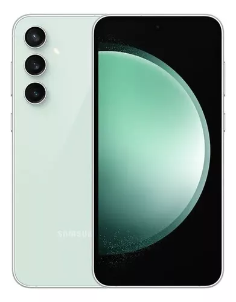

iPhone 16
postado 05 em março 2022
O iPhone 16 traz inovações significativas em design e desempenho. Com um novo processador A17, ele promete maior eficiência energética e melhorias no desempenho gráfico, ideal para jogos e aplicativos pesados. A tela Super Retina XDR tem um brilho ainda mais intenso e suporte a ProMotion, garantindo uma experiência visual fluida. As câmeras receberam upgrades, especialmente em condições de baixa luminosidade, e novos recursos de fotografia computacional. Além disso, o iPhone 16 oferece melhorias em conectividade, incluindo suporte para as últimas tecnologias de 5G.
Leia maisGalaxy S23
postado 05 em março 2022 O Galaxy S23 destaca-se pelo seu design elegante e construção robusta. Equipado com o processador Snapdragon 8 Gen 2, ele entrega um desempenho excepcional em multitarefa e jogos. A tela AMOLED de 6,1 polegadas oferece cores vibrantes e um contraste impressionante. A configuração de câmeras inclui um sensor principal de alta resolução, com recursos avançados de fotografia noturna e gravação de vídeo em 8K. A bateria tem uma autonomia otimizada, e o dispositivo conta com uma série de funcionalidades exclusivas do sistema One UI, tornando a experiência do usuário ainda mais intuitiva e personalizável.
Leia mais